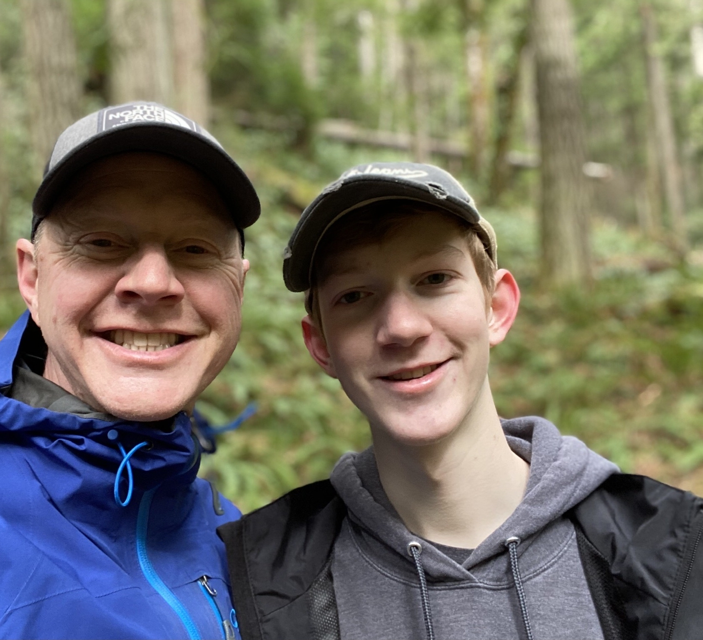
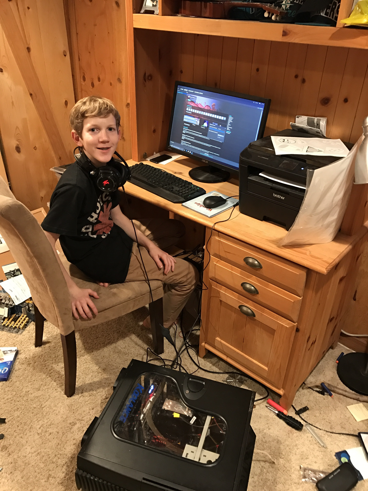

About Me {
I am a computer science pre-major at Western Washington University. Before I came to Western I earned my Associate in Arts degree at Olympic College. Before Olympic College I've had an interest in computers for several years. I buit my first computer in junior high and I took two years of computer repair classes in high school. In my spare time I still like to put together computers, learn the accordion, drink tea, and visit my friends & family.

